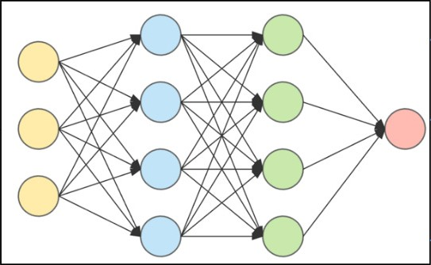
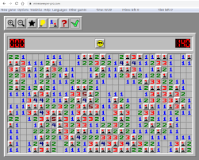

Projects
Reinforcement Learning Driving Agent
(Python, PyTorch, Pygame)

Developed a Deep Q-Learning (DQN) agent from scratch to autonomously learn optimal racing lines on a custom-built track environment.
Key Features
- Implemented a custom reward function leveraging speed, checkpoints, and track position to guide the agent's learning process.
- Trained the model across 5,000+ episodes with experience replay, epsilon-greedy exploration, and target network updates for stable learning.
- Built a checkpoint system to save and resume full training state (model, optimizer, epsilon) across multiple sessions.
- Integrated Pygame-based simulation with ray casting for real-time state observations and environment rendering.
Full-Stack Stock Trading Simulator
(React, TypeScript, Python, Flask, Supabase)
Architected and developed a full-stack, session-based stock trading game where users manage a portfolio over a simulated "year" using procedurally generated market data.
Key Features
- Secure user authentication and session management to allow players to resume active games.
- A RESTful API built with Python and Flask to handle all game logic and state changes.
- Robust, atomic database transactions for all buy/sell orders using custom SQL (pl/pgsql) functions to guarantee data integrity.
- A dynamic and responsive user interface built with React and TypeScript for a seamless user experience.
Mock-Restaurant
(HTML5, CSS, JavaScript, ReactJS, Vite, Vuse, Supabase)
Developed a mock-restaurant app enabling users to place orders and redeem rewards points.
Key Features
- Secure login via email authentication.
- Data storage and retrieval through Supabase.
- Dynamic interface to showcase user information.
Minesweeper
(C++, SFML)

Interactive minesweeper game developed in C++ to demonstrate OOP concepts.
Key Features
- Custom board and number of mines.
- Debug mode, scoreboard, standard minesweeper functionality.
- Leaderboard to compare solve times.
Personal Portfolio Website
(HTML5, CSS, JavaScript)
A simple portfolio website to showcase my skills and projects.